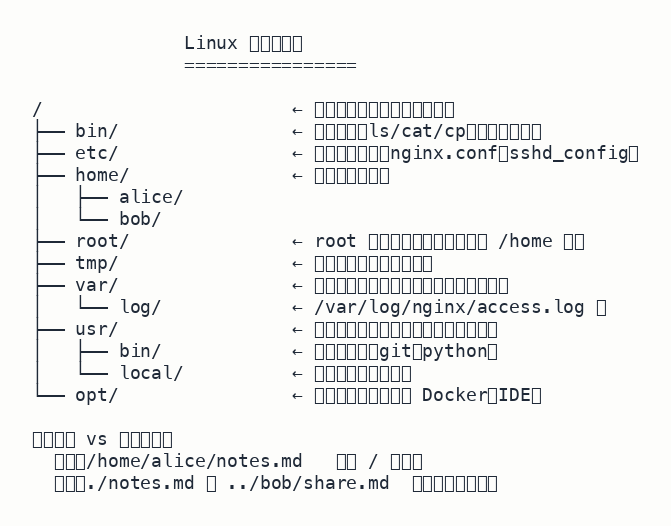
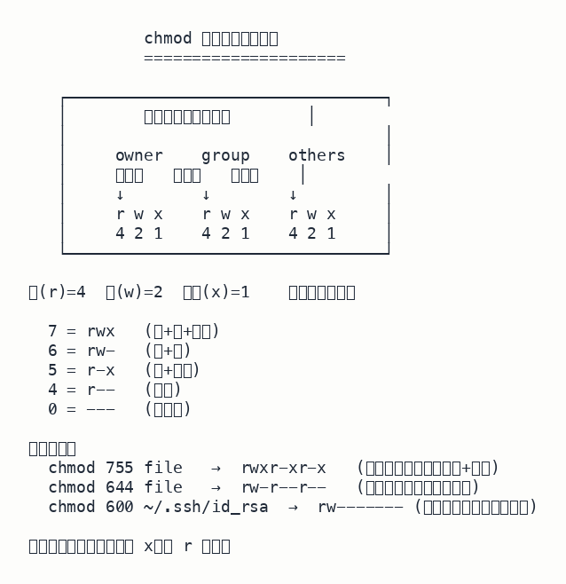

第 2 课 · Linux 目录与权限
在 Linux 服务器上做任何事，先得搞懂两件事：文件在哪（目录树）和谁能做什么（权限）。这课把这两块串起来讲。
一、目录树：你所在的坐标
Linux 文件系统是一棵以 / 为根的树，没有 Windows 那种 C: / D: 盘符。所有路径都从 / 开始往下走。

常用目录：
| 目录 | 用途 |
|---|---|
/bin | 基础命令（ls/cat/cp），所有人可用 |
/etc | 系统配置文件（nginx.conf、sshd_config） |
/home | 普通用户家目录（/home/alice） |
/root | root 用户家目录（注意：不在 /home 下） |
/var/log | 运行期日志 |
/tmp | 临时文件，重启可能清空 |
/opt | 第三方软件（Docker、IDE） |
二、绝对路径 vs 相对路径
表达一个文件位置有两种写法：
绝对路径
从 / 开始，唯一无歧义。
例：/home/alice/notes.md
相对路径
从当前目录算起。
例：当前在 /home/alice/projects，../bob/notes.md 表示 /home/bob/notes.md
相对路径的两个特殊符号：
.当前目录..上一级目录
计算示例：从 /home/alice/projects 出发，../bob/notes.md 的解析过程：.. 上跳到 /home/alice，再 ../bob 上跳到 /home 再下到 bob，最后 notes.md。结果：/home/bob/notes.md。
三、权限字段：谁能做什么
ls -l 输出每行开头有 10 位权限字段：
-rwxr-xr--
│├─┤├─┤├─┤
│ ↑ ↑ ↑
│ ow gr ot
│
└── 文件类型（- 普通文件、d 目录）后 9 位三组从左到右：
- owner（所有者）——文件属于谁
- group（所属组）——同一团队的成员
- others（其他人）——系统上所有其他用户
每组三位顺序固定：r w x = 读 / 写 / 执行。

四、chmod：用数字改权限
每组权限可以转成一个数字——把那组里的 rwx 当成三位二进制：
r = 4 w = 2 x = 1
7 = 4+2+1 = rwx 读+写+执行
6 = 4+2 = rw- 读+写
5 = 4+1 = r-x 读+执行
4 = 4 = r-- 只读
0 = 0 = --- 无权限三个数字连写，分别是 owner / group / others 的权限：
| 命令 | 结果 | 典型用途 |
|---|---|---|
chmod 755 file | rwxr-xr-x | 所有者全权、其他人读+执行（脚本、公开目录） |
chmod 644 file | rw-r--r-- | 所有者读写、其他人只读（普通文档） |
chmod 600 file | rw------- | 仅所有者读写（密钥、私密配置） |
chmod 700 file | rwx------ | 仅所有者全权（私人文档、个人脚本） |
易错点：要让一个脚本能 ./deploy.sh 直接跑，必须给执行权限 (x)。只给读 (r) 不够——能 cat 看内容但不能执行。SSH 私钥（如 ~/.ssh/id_rsa）必须 chmod 600，否则 ssh 会拒绝使用（权限太松）。
五、常用命令补遗
| 命令 | 作用 |
|---|---|
cd <dir> | 切换当前目录（change directory） |
mkdir -p a/b/c | 建嵌套目录（-p 自动建父目录） |
rm file | 删文件（注意：无回收站） |
rm -rf dir | 递归强制删目录（危险！-r 递归 -f 不询问） |
ls -l | 看权限、属主、大小、修改时间 |
死刑命令：rm -rf / 会从根开始递归删整个文件系统，没有任何确认。永远不要在脚本里这么写，更不要在 root 用户下试。Linux 没有回收站——删了就是删了。
六、下一步
- 读完这课，去答题页刷 LNX-001 到 LNX-003 三道题。
- 回去复习 git 三区，因为日常工作 git + Linux 总是一起用。